Packages¶
En cliquant sur le menu Packages, on arrive directement sur les packages accessibles par l’utilisateur en fonction de ses droits :
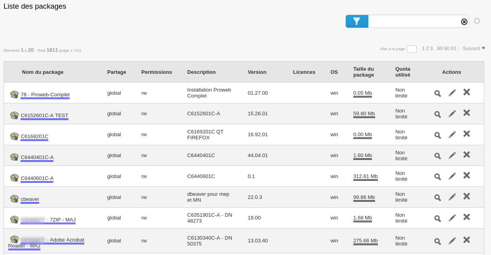
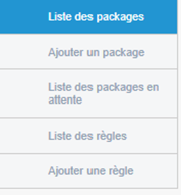
Ajouter un package¶
Le partage Samba “Package”¶
L’interface MMC¶
Via l’interface, il suffit de charger les fichiers nécessaires.
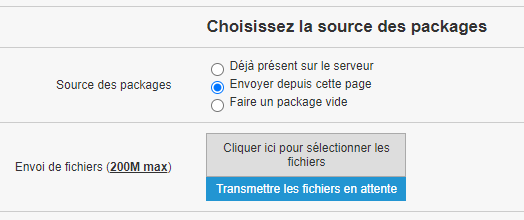
Assistant à la création¶
Exemple de création de package contenant PDFCreator
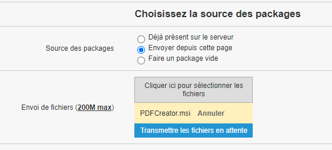
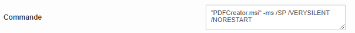
Commande d’assistance¶
Création de package avancée¶
Depuis la vue Packages, créer un nouveau package en remplissant les champs pour un déploiement classique :
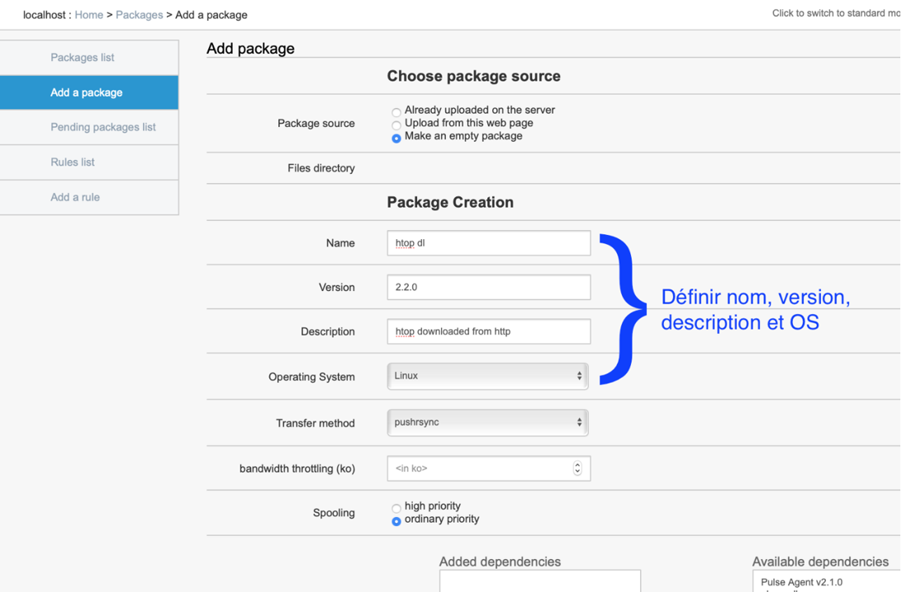
Plus loin sur cette même page, déplacer l’action Download File (Télécharger le fichier) vers le Workflow et définir l’URL contenant le fichier à télécharger
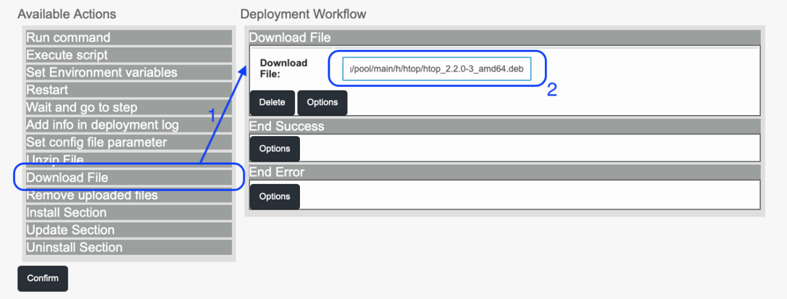
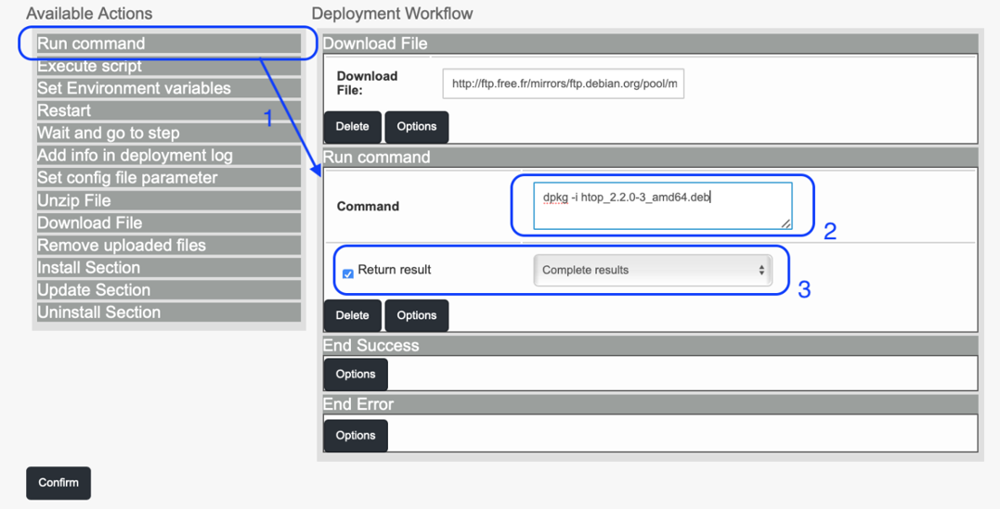
Une autre fonction importante est présente : la fonction Executer le script, qui permet de lancer un script dans le langage que l’on souhaite
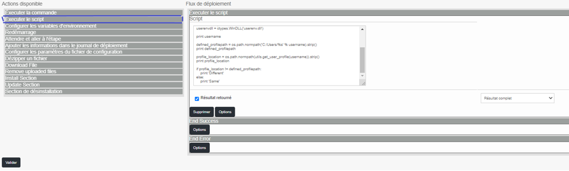
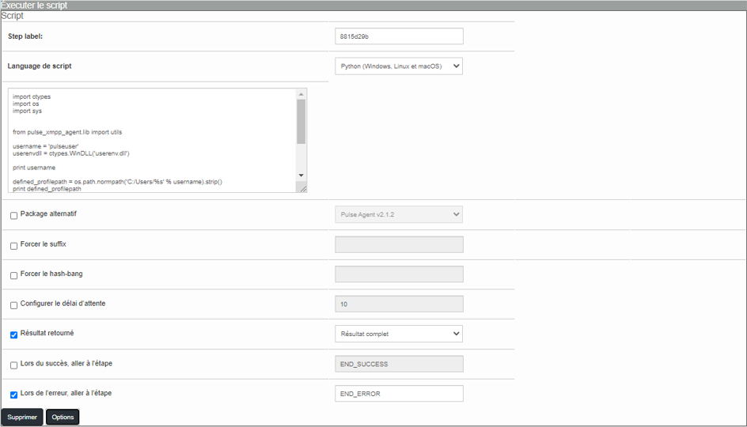
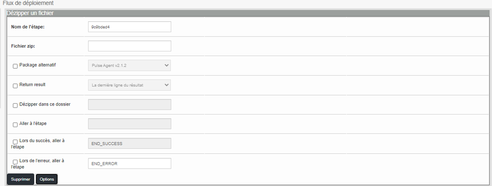
Déploiement du package¶
Lors du déploiement, le déroulement des étapes est affiché. Les lignes suivantes montrent qu’un téléchargement a lieu et qu’il est réussi :
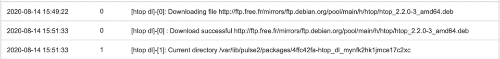
En cas d’erreur, les lignes suivantes sont affichées :
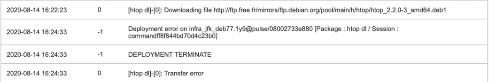
Et dans la vue générale des déploiements, le statut est le suivant: ABORT TRANSFER FAILED
Déploiement programmé¶
Ce type de déploiement permet de planifier quand le déploiement va avoir lieu mais également plusieurs options :
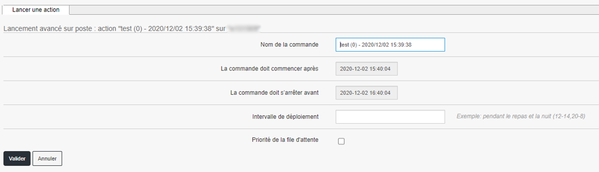
Déploiement sur groupe¶
Le déploiement sur groupe est identique au déploiement unitaire. Cependant, on va trouver en plus la convergence applicative, cf point suivant.
Convergence¶
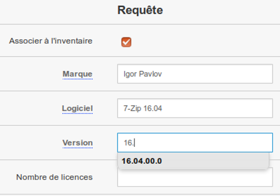
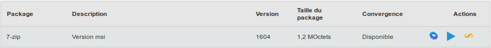
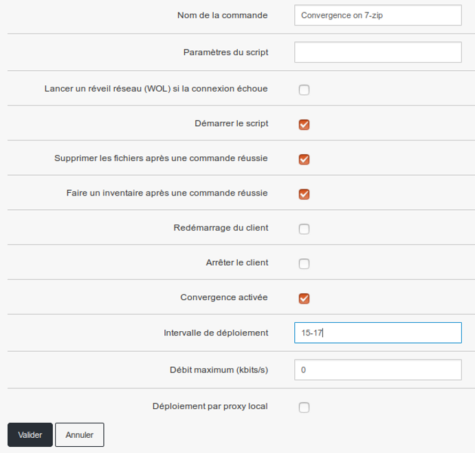